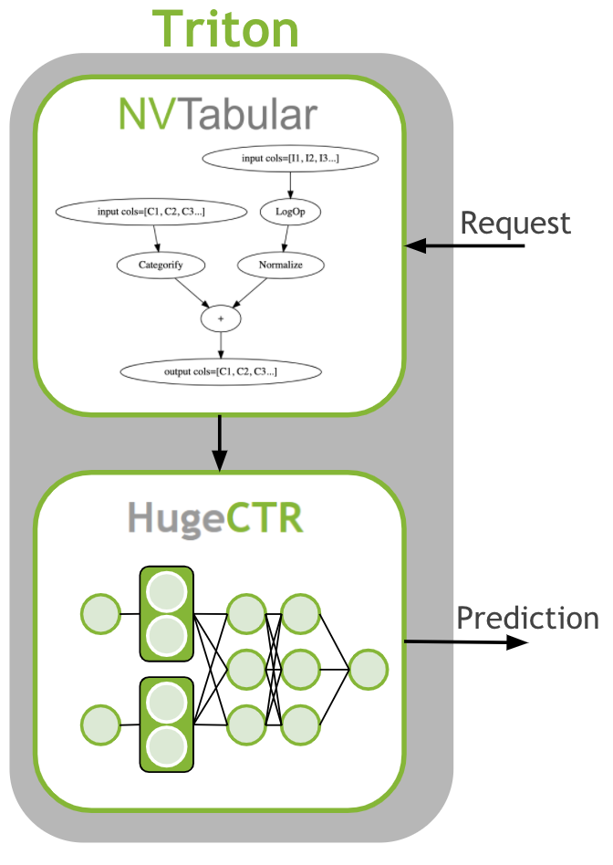

# Copyright 2021 NVIDIA Corporation. All Rights Reserved.
#
# Licensed under the Apache License, Version 2.0 (the "License");
# you may not use this file except in compliance with the License.
# You may obtain a copy of the License at
#
# http://www.apache.org/licenses/LICENSE-2.0
#
# Unless required by applicable law or agreed to in writing, software
# distributed under the License is distributed on an "AS IS" BASIS,
# WITHOUT WARRANTIES OR CONDITIONS OF ANY KIND, either express or implied.
# See the License for the specific language governing permissions and
# limitations under the License.
# ==============================================================================
Scaling Criteo: Triton Inference with HugeCTR#
This notebook is created using the latest stable merlin-hugectr container.
Overview#
The last step is to deploy the ETL workflow and saved model to production. In the production setting, we want to transform the input data as during training (ETL). We need to apply the same mean/std for continuous features and use the same categorical mapping to convert the categories to continuous integer before we use the deep learning model for a prediction. Therefore, we deploy the NVTabular workflow with the HugeCTR model as an ensemble model to Triton Inference. The ensemble model guarantees that the same transformation are applied to the raw inputs.
{kind=link}
Learning objectives#
In this notebook, we learn how to deploy our models to production:
Use NVTabular to generate config and model files for Triton Inference Server
Deploy an ensemble of NVTabular workflow and HugeCTR model
Send example request to Triton Inference Server
Inference with Triton and HugeCTR#
First, we need to generate the Triton Inference Server configurations and save the models in the correct format. In the previous notebooks 02-ETL-with-NVTabular and 03-Training-with-HugeCTR we saved the NVTabular workflow and HugeCTR model to disk. We will load them.
Saving Ensemble Model for Triton Inference Server#
After training terminates, we can see that two .model files are generated. We need to move them inside a temporary folder, like criteo_hugectr/1. Let’s create these folders.
import os
import numpy as np
Now we move our saved .model files inside 1 folder. We use only the last snapshot after 9600 iterations.
os.system("mv *9600.model ./criteo_hugectr/1/")
Now we can save our models to be deployed at the inference stage. To do so we will use export_hugectr_ensemble method below. With this method, we can generate the config.pbtxt files automatically for each model. In doing so, we should also create a hugectr_params dictionary, and define the parameters like where the amazonreview.json file will be read, slots which corresponds to number of categorical features, embedding_vector_size, max_nnz, and n_outputs which is number of outputs.
The script below creates an ensemble triton server model where
workflow is the the nvtabular workflow used in preprocessing,
hugectr_model_path is the HugeCTR model that should be served.
This path includes the model files.
name is the base name of the various triton models.
output_path is the path where is model will be saved to.
cats are the categorical column names
conts are the continuous column names
We need to load the NVTabular workflow first
import nvtabular as nvt
BASE_DIR = os.environ.get("BASE_DIR", "/raid/data/criteo")
input_path = os.path.join(BASE_DIR, "test_dask/output")
workflow = nvt.Workflow.load(os.path.join(input_path, "workflow"))
Let’s clear the directory
os.system("rm -rf /model/*")
0
from nvtabular.inference.triton import export_hugectr_ensemble
hugectr_params = dict()
hugectr_params["config"] = "/model/criteo/1/criteo.json"
hugectr_params["slots"] = 26
hugectr_params["max_nnz"] = 1
hugectr_params["embedding_vector_size"] = 128
hugectr_params["n_outputs"] = 1
export_hugectr_ensemble(
workflow=workflow,
hugectr_model_path="./criteo_hugectr/1/",
hugectr_params=hugectr_params,
name="criteo",
output_path="/model/",
label_columns=["label"],
cats=["C" + str(x) for x in range(1, 27)],
conts=["I" + str(x) for x in range(1, 14)],
max_batch_size=64,
)
We can take a look at the generated files.
!tree /model
/model
├── criteo
│ ├── 1
│ │ ├── 0_opt_sparse_9600.model
│ │ ├── 0_sparse_9600.model
│ │ │ ├── emb_vector
│ │ │ ├── key
│ │ │ └── slot_id
│ │ ├── _dense_9600.model
│ │ ├── _opt_dense_9600.model
│ │ └── criteo.json
│ └── config.pbtxt
├── criteo_ens
│ ├── 1
│ └── config.pbtxt
└── criteo_nvt
├── 1
│ ├── model.py
│ └── workflow
│ ├── categories
│ │ ├── unique.C1.parquet
│ │ ├── unique.C10.parquet
│ │ ├── unique.C11.parquet
│ │ ├── unique.C12.parquet
│ │ ├── unique.C13.parquet
│ │ ├── unique.C14.parquet
│ │ ├── unique.C15.parquet
│ │ ├── unique.C16.parquet
│ │ ├── unique.C17.parquet
│ │ ├── unique.C18.parquet
│ │ ├── unique.C19.parquet
│ │ ├── unique.C2.parquet
│ │ ├── unique.C20.parquet
│ │ ├── unique.C21.parquet
│ │ ├── unique.C22.parquet
│ │ ├── unique.C23.parquet
│ │ ├── unique.C24.parquet
│ │ ├── unique.C25.parquet
│ │ ├── unique.C26.parquet
│ │ ├── unique.C3.parquet
│ │ ├── unique.C4.parquet
│ │ ├── unique.C5.parquet
│ │ ├── unique.C6.parquet
│ │ ├── unique.C7.parquet
│ │ ├── unique.C8.parquet
│ │ └── unique.C9.parquet
│ ├── column_types.json
│ ├── metadata.json
│ └── workflow.pkl
└── config.pbtxt
9 directories, 40 files
We need to write a configuration file with the stored model weights and model configuration.
%%writefile '/model/ps.json'
# fmt: off
{
"supportlonglong": true,
"models": [
{
"model": "criteo",
"sparse_files": ["/model/criteo/1/0_sparse_9600.model"],
"dense_file": "/model/criteo/1/_dense_9600.model",
"network_file": "/model/criteo/1/criteo.json"
}
]
}
Overwriting /model/ps.json
Loading Ensemble Model with Triton Inference Server#
We have only saved the models for Triton Inference Server. We started Triton Inference Server in explicit mode, meaning that we need to send a request that Triton will load the ensemble model.
We connect to the Triton Inference Server.
import tritonhttpclient
try:
triton_client = tritonhttpclient.InferenceServerClient(url="localhost:8000", verbose=True)
print("client created.")
except Exception as e:
print("channel creation failed: " + str(e))
client created.
/usr/local/lib/python3.8/dist-packages/tritonhttpclient/__init__.py:31: DeprecationWarning: The package `tritonhttpclient` is deprecated and will be removed in a future version. Please use instead `tritonclient.http`
warnings.warn(
We deactivate warnings.
import warnings
warnings.filterwarnings("ignore")
We check if the server is alive.
triton_client.is_server_live()
GET /v2/health/live, headers None
<HTTPSocketPoolResponse status=200 headers={'content-length': '0', 'content-type': 'text/plain'}>
True
We check the available models in the repositories:
criteo_ens: Ensemble
criteo_nvt: NVTabular
criteo: HugeCTR model
triton_client.get_model_repository_index()
POST /v2/repository/index, headers None
<HTTPSocketPoolResponse status=200 headers={'content-type': 'application/json', 'content-length': '93'}>
bytearray(b'[{"name":".ipynb_checkpoints"},{"name":"criteo"},{"name":"criteo_ens"},{"name":"criteo_nvt"}]')
[{'name': '.ipynb_checkpoints'},
{'name': 'criteo'},
{'name': 'criteo_ens'},
{'name': 'criteo_nvt'}]
We load the models individually.
%%time
triton_client.load_model(model_name="criteo_nvt")
POST /v2/repository/models/criteo_nvt/load, headers None
<HTTPSocketPoolResponse status=200 headers={'content-type': 'application/json', 'content-length': '0'}>
Loaded model 'criteo_nvt'
CPU times: user 4.21 ms, sys: 258 µs, total: 4.47 ms
Wall time: 20.6 s
%%time
triton_client.load_model(model_name="criteo")
POST /v2/repository/models/criteo/load, headers None
<HTTPSocketPoolResponse status=200 headers={'content-type': 'application/json', 'content-length': '0'}>
Loaded model 'criteo'
CPU times: user 1.8 ms, sys: 3.01 ms, total: 4.81 ms
Wall time: 32.4 s
%%time
triton_client.load_model(model_name="criteo_ens")
POST /v2/repository/models/criteo_ens/load, headers None
<HTTPSocketPoolResponse status=200 headers={'content-type': 'application/json', 'content-length': '0'}>
Loaded model 'criteo_ens'
CPU times: user 4.7 ms, sys: 0 ns, total: 4.7 ms
Wall time: 20.2 s
Example Request to Triton Inference Server#
Now, the models are loaded and we can create a sample request. We read an example raw batch for inference.
# Get dataframe library - cudf or pandas
from merlin.core.dispatch import get_lib
df_lib = get_lib()
# read in the workflow (to get input/output schema to call triton with)
batch_path = os.path.join(BASE_DIR, "converted/criteo")
batch = df_lib.read_parquet(os.path.join(batch_path, "*.parquet"), num_rows=3)
batch = batch[[x for x in batch.columns if x != "label"]]
print(batch)
I1 I2 I3 I4 I5 I6 I7 I8 I9 I10 ... C17 \
0 5 110 <NA> 16 <NA> 1 0 14 7 1 ... -771205462
1 32 3 5 <NA> 1 0 0 61 5 0 ... -771205462
2 <NA> 233 1 146 1 0 0 99 7 0 ... -771205462
C18 C19 C20 C21 C22 C23 \
0 -1206449222 -1793932789 -1014091992 351689309 632402057 -675152885
1 -1578429167 -1793932789 -20981661 -1556988767 -924717482 391309800
2 1653545869 -1793932789 -1014091992 351689309 632402057 -675152885
C24 C25 C26
0 2091868316 809724924 -317696227
1 1966410890 -1726799382 -1218975401
2 883538181 -10139646 -317696227
[3 rows x 39 columns]
We prepare the batch for inference by using correct column names and data types. We use the same datatypes as defined in our dataframe.
batch.dtypes
I1 int32
I2 int32
I3 int32
I4 int32
I5 int32
I6 int32
I7 int32
I8 int32
I9 int32
I10 int32
I11 int32
I12 int32
I13 int32
C1 int32
C2 int32
C3 int32
C4 int32
C5 int32
C6 int32
C7 int32
C8 int32
C9 int32
C10 int32
C11 int32
C12 int32
C13 int32
C14 int32
C15 int32
C16 int32
C17 int32
C18 int32
C19 int32
C20 int32
C21 int32
C22 int32
C23 int32
C24 int32
C25 int32
C26 int32
dtype: object
import tritonclient.http as httpclient
from tritonclient.utils import np_to_triton_dtype
inputs = []
col_names = list(batch.columns)
col_dtypes = [np.int32] * len(col_names)
for i, col in enumerate(batch.columns):
d = batch[col].values_host.astype(col_dtypes[i])
d = d.reshape(len(d), 1)
inputs.append(httpclient.InferInput(col_names[i], d.shape, np_to_triton_dtype(col_dtypes[i])))
inputs[i].set_data_from_numpy(d)
We send the request to the triton server and collect the last output.
# placeholder variables for the output
outputs = [httpclient.InferRequestedOutput("OUTPUT0")]
# build a client to connect to our server.
# This InferenceServerClient object is what we'll be using to talk to Triton.
# make the request with tritonclient.http.InferInput object
response = triton_client.infer("criteo_ens", inputs, request_id="1", outputs=outputs)
print("predicted sigmoid result:\n", response.as_numpy("OUTPUT0"))
POST /v2/models/criteo_ens/infer, headers {'Inference-Header-Content-Length': 3383}
b'{"id":"1","inputs":[{"name":"I1","shape":[3,1],"datatype":"INT32","parameters":{"binary_data_size":12}},{"name":"I2","shape":[3,1],"datatype":"INT32","parameters":{"binary_data_size":12}},{"name":"I3","shape":[3,1],"datatype":"INT32","parameters":{"binary_data_size":12}},{"name":"I4","shape":[3,1],"datatype":"INT32","parameters":{"binary_data_size":12}},{"name":"I5","shape":[3,1],"datatype":"INT32","parameters":{"binary_data_size":12}},{"name":"I6","shape":[3,1],"datatype":"INT32","parameters":{"binary_data_size":12}},{"name":"I7","shape":[3,1],"datatype":"INT32","parameters":{"binary_data_size":12}},{"name":"I8","shape":[3,1],"datatype":"INT32","parameters":{"binary_data_size":12}},{"name":"I9","shape":[3,1],"datatype":"INT32","parameters":{"binary_data_size":12}},{"name":"I10","shape":[3,1],"datatype":"INT32","parameters":{"binary_data_size":12}},{"name":"I11","shape":[3,1],"datatype":"INT32","parameters":{"binary_data_size":12}},{"name":"I12","shape":[3,1],"datatype":"INT32","parameters":{"binary_data_size":12}},{"name":"I13","shape":[3,1],"datatype":"INT32","parameters":{"binary_data_size":12}},{"name":"C1","shape":[3,1],"datatype":"INT32","parameters":{"binary_data_size":12}},{"name":"C2","shape":[3,1],"datatype":"INT32","parameters":{"binary_data_size":12}},{"name":"C3","shape":[3,1],"datatype":"INT32","parameters":{"binary_data_size":12}},{"name":"C4","shape":[3,1],"datatype":"INT32","parameters":{"binary_data_size":12}},{"name":"C5","shape":[3,1],"datatype":"INT32","parameters":{"binary_data_size":12}},{"name":"C6","shape":[3,1],"datatype":"INT32","parameters":{"binary_data_size":12}},{"name":"C7","shape":[3,1],"datatype":"INT32","parameters":{"binary_data_size":12}},{"name":"C8","shape":[3,1],"datatype":"INT32","parameters":{"binary_data_size":12}},{"name":"C9","shape":[3,1],"datatype":"INT32","parameters":{"binary_data_size":12}},{"name":"C10","shape":[3,1],"datatype":"INT32","parameters":{"binary_data_size":12}},{"name":"C11","shape":[3,1],"datatype":"INT32","parameters":{"binary_data_size":12}},{"name":"C12","shape":[3,1],"datatype":"INT32","parameters":{"binary_data_size":12}},{"name":"C13","shape":[3,1],"datatype":"INT32","parameters":{"binary_data_size":12}},{"name":"C14","shape":[3,1],"datatype":"INT32","parameters":{"binary_data_size":12}},{"name":"C15","shape":[3,1],"datatype":"INT32","parameters":{"binary_data_size":12}},{"name":"C16","shape":[3,1],"datatype":"INT32","parameters":{"binary_data_size":12}},{"name":"C17","shape":[3,1],"datatype":"INT32","parameters":{"binary_data_size":12}},{"name":"C18","shape":[3,1],"datatype":"INT32","parameters":{"binary_data_size":12}},{"name":"C19","shape":[3,1],"datatype":"INT32","parameters":{"binary_data_size":12}},{"name":"C20","shape":[3,1],"datatype":"INT32","parameters":{"binary_data_size":12}},{"name":"C21","shape":[3,1],"datatype":"INT32","parameters":{"binary_data_size":12}},{"name":"C22","shape":[3,1],"datatype":"INT32","parameters":{"binary_data_size":12}},{"name":"C23","shape":[3,1],"datatype":"INT32","parameters":{"binary_data_size":12}},{"name":"C24","shape":[3,1],"datatype":"INT32","parameters":{"binary_data_size":12}},{"name":"C25","shape":[3,1],"datatype":"INT32","parameters":{"binary_data_size":12}},{"name":"C26","shape":[3,1],"datatype":"INT32","parameters":{"binary_data_size":12}}],"outputs":[{"name":"OUTPUT0","parameters":{"binary_data":true}}]}\x05\x00\x00\x00 \x00\x00\x00\x00\x00\x00\x00n\x00\x00\x00\x03\x00\x00\x00\xe9\x00\x00\x00\x00\x00\x00\x00\x05\x00\x00\x00\x01\x00\x00\x00\x10\x00\x00\x00\x00\x00\x00\x00\x92\x00\x00\x00\x00\x00\x00\x00\x01\x00\x00\x00\x01\x00\x00\x00\x01\x00\x00\x00\x00\x00\x00\x00\x00\x00\x00\x00\x00\x00\x00\x00\x00\x00\x00\x00\x00\x00\x00\x00\x0e\x00\x00\x00=\x00\x00\x00c\x00\x00\x00\x07\x00\x00\x00\x05\x00\x00\x00\x07\x00\x00\x00\x01\x00\x00\x00\x00\x00\x00\x00\x00\x00\x00\x00\x00\x00\x00\x00\x01\x00\x00\x00\x01\x00\x00\x002\x01\x00\x00U\x0c\x00\x00\x1d\x0c\x00\x00\x00\x00\x00\x00\x05\x00\x00\x00\x01\x00\x00\x00y\rwb\x8d\xfd\xf3\xe5y\rwbX]\x1f\xe2\xa6\xff\xaa\xa0\x03B\x98\xad/D\xea\xaf\xd5\x15\xaao\r\xc6\xbeb\xcf\x7f\\\x94!4\x8a\xda\xeeIl8H\'\xb08#\x9f\xd6<M\x06U\xe7\xcbm\xcdo\xcbm\xcdo\xcbm\xcdo!\xaa\x805\x81\xed\x16\xabb\xeb\xf5\xb5\x03\x89\x80()lBC\x8b\xcc\xf2\xd1\xa6\xdf\xdeFT\xe1\xf5\x1d\x1f\x82N.\xc1}\x02.\xa9\xc0\xe9}\xc1}\x02.1B|\x0cd\xdcRf1B|\x0c\x1f\x1d\x98\x95\'N\xeb\x99\x84aq\x12\xb7\xff\xc5\x00\xb7\xff\xc5\x00\xb7\xff\xc5\x007\xe5N\xbe7\xe5N\xbe7\xe5N\xbe\xcct\x0b\x8a\x99\xfe\xbb\xf3\x0b\r\x0f\xf7\xfa>\xdcL\xfa>\xdcL\xfa>\xdcL\xaaV\x08\xd2\xaaV\x08\xd2\xaaV\x08\xd2\xba\x0b\x17\xb8\x11\x15\xeb\xa1\x8d\x1b\x8fb\x0b\xc2\x12\x95\x0b\xc2\x12\x95\x0b\xc2\x12\x95(/\x8e\xc3c\xd8\xbf\xfe(/\x8e\xc3]Z\xf6\x14\xa1<2\xa3]Z\xf6\x14\x89\xb0\xb1%V\xee\xe1\xc8\x89\xb0\xb1%\x0b\xfc\xc1\xd7\xe8\xe9R\x17\x0b\xfc\xc1\xd7\x9c`\xaf|\x8a\x0c5u\x05\xb9\xa94\xfckC0\xea!\x13\x99\x02He\xff\x1dW\x10\xedW\xe9W\xb7\x1dW\x10\xed'
<HTTPSocketPoolResponse status=400 headers={'content-length': '122', 'content-type': 'text/plain'}>
---------------------------------------------------------------------------
InferenceServerException Traceback (most recent call last)
/tmp/ipykernel_2961/3517835948.py in <module>
5 # This InferenceServerClient object is what we'll be using to talk to Triton.
6 # make the request with tritonclient.http.InferInput object
----> 7 response = triton_client.infer("criteo_ens", inputs, request_id="1", outputs=outputs)
8
9 print("predicted sigmoid result:\n", response.as_numpy("OUTPUT0"))
/usr/local/lib/python3.8/dist-packages/tritonclient/http/__init__.py in infer(self, model_name, inputs, model_version, outputs, request_id, sequence_id, sequence_start, sequence_end, priority, timeout, headers, query_params, request_compression_algorithm, response_compression_algorithm)
1254 headers=headers,
1255 query_params=query_params)
-> 1256 _raise_if_error(response)
1257
1258 return InferResult(response, self._verbose)
/usr/local/lib/python3.8/dist-packages/tritonclient/http/__init__.py in _raise_if_error(response)
62 error = _get_error(response)
63 if error is not None:
---> 64 raise error
65
66
InferenceServerException: in ensemble 'criteo_ens', Failed to process the request(s), message: The stub process has exited unexpectedly.
Let’s unload the model. We need to unload each model.
triton_client.unload_model(model_name="criteo_ens")
triton_client.unload_model(model_name="criteo_nvt")
triton_client.unload_model(model_name="criteo")
POST /v2/repository/models/criteo_ens/unload, headers None
{"parameters":{"unload_dependents":false}}
<HTTPSocketPoolResponse status=200 headers={'content-type': 'application/json', 'content-length': '0'}>
Loaded model 'criteo_ens'
POST /v2/repository/models/criteo_nvt/unload, headers None
{"parameters":{"unload_dependents":false}}
<HTTPSocketPoolResponse status=200 headers={'content-type': 'application/json', 'content-length': '0'}>
Loaded model 'criteo_nvt'
POST /v2/repository/models/criteo/unload, headers None
{"parameters":{"unload_dependents":false}}
<HTTPSocketPoolResponse status=200 headers={'content-type': 'application/json', 'content-length': '0'}>
Loaded model 'criteo'